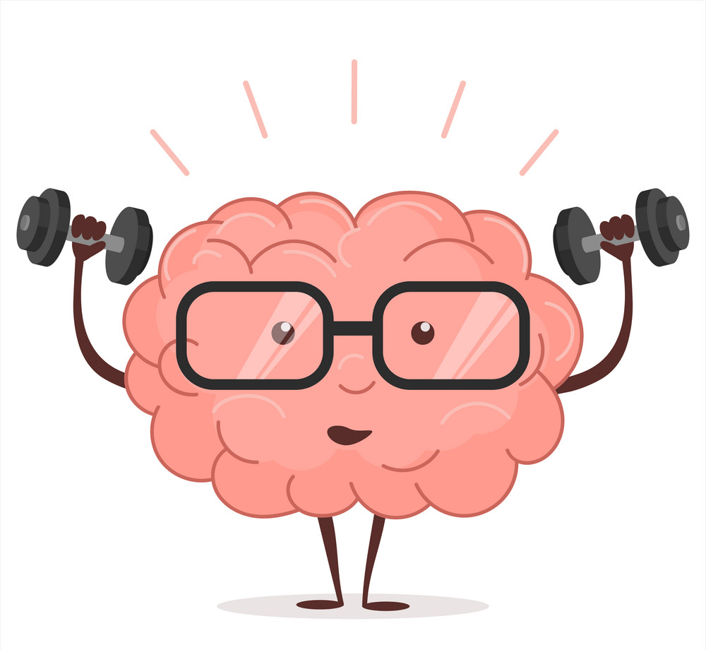

Sobre mi
Soc l'Adrián Sevilla Medina, un estudiant a qui li encanta el món del desenvolupament web. Diuen, i estic d'acord, que aquest és un món on l'aprenentatge no té límits. Sempre n'hi ha alguna cosa nova per aprendre. I és tot just la fase en la qual em trobo: aprenent per a ser, en un futur, el millor desenvolupador web possible.
Estudis
La meva infància i adolescència, a nivells acadèmics van ser les pròpies d'un nen que acostumava a treure bones notes. Això, que en un primer moment es pot veure com una qualitat positiva, en el meu cas es va tornar en una negativa, ja que, sí, treia bones notes, i tot se'm donava més o menys bé, però... què m'agradava realment? No ho sabia.
No es tractava de si era més o menys llest, o si era apte per a fer una determinada feina. Jo volia que, fes el que fes, m'agradés. I no sabia què m'agradava. Per aquest motiu vaig acabar estudiant un Grau Superior d'Administració i Finances. No m'entusiasmava, però pensava que tindria moltes sortides i era tot el que m'importava.
A continuació tots els estudis els quals he estudiat al llarg de la meva vida:
| Any | Institut | Estudis | Duració | Nota mitja |
|---|---|---|---|---|
| 2024-en curs | ITIC BCN | GS Desenvolupament d'Aplicacions Web | 2 anys | (en curs) |
| 2018 | Cambridge School | First Certificate in English B2 | - | |
| 2016-2018 | IES Carles Vallbona | GS Administració i Finances | 2 anys | 8.6 |
| 2014-2016 | Institut Antoni Cumella | Batxillerat | 2 anys | 8.4 |
| 2010-2014 | Educem | ESO | 4 anys | 8.1 |
Projectes
Després d'estar uns quants anys treballant en el sector administratiu, no em sentia feliç amb el què feia. Un dia, tot mirant vídeos sobre informàtica per la xarxa, ja que la informàtica és, i era, un camp que m'agrada bastant, vaig arribar a veure uns vídeos de programació web. Em va encantar allò que vaig veure.
Això, tot junt amb el fet que no estava satisfet amb la meva situació laboral, em va dur a prendre una decisió: estudiar programació web. I ara, mentre estic escrivint aquestes línies, només puc dir que em sento molt content per la decisió que vaig prendre.
Ara sí estic fent allò que m'entusiasma.
A continuació, tots els projectes que he fet durant el curs:
| Nom del projecte | Asignatura | Descripció |
|---|---|---|
| Introducció a l'HTML | Llenguatge de marques | Projecte inicial, en el que feiem un "Hola món" per a veure com funcionava HTML |
| Elements bàsics d'HTML | Primer projecte HTML, en el que recreàvem l'estructura d'una pàgina web. En el meu cas, una de cuina. | |
| Taules + CSS | Projecte amb el qual veiem com funcionen les taules i feiem l'horari de classe. | |
| Formulari | En aquest projecte realitzàvem un formulari, que havia d'incloure tot tipus de camps. Aquest formulari, més endavant, s'inclou en l'Activitat Transversal. | |
| Activitat transversal | Activitat que consistia a fer una web amb diverses pàgines sobre una temàtica en comú. Funcionava a mode de recopilatori de tot el vist fins al moment actual. |
Contacte
En cas de tenir algun dubte, o voler contactar amb mi, pots fer-ho enviant-me un mail a aquesta adreça.